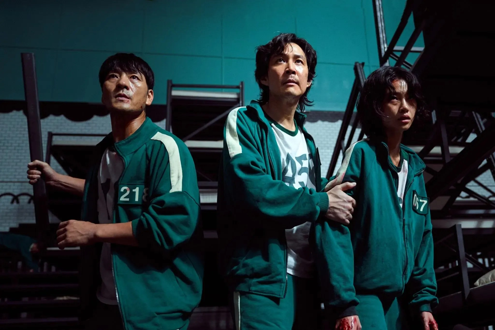

‘Squid Game’ Was the Most-Tweeted TV Show of 2021

No shocker here: For Twitter users, it was a green light for “Squid Game,” the massive global hit that
became Netflix’s biggest TV show in its initial release. The Korean drama was the
No. 1 most-tweeted about television show of the year.
Twitter released the rankings as part of its year-in-review “#OnlyOnTwitter” report, based on internal
company data from Jan. 1 - Dec. 1, 2021Jan. 1 - Nov. 15, 2021.
In the U.S., following “Squid Game” were Disney Plus’ “WandaVision,” “Sesame Street,” “Saturday Night
Live” and “Game of Thrones,” according to newly released Twitter data.
Meanwhile, on the movie front, “Black Panther” — the 2018 Marvel film starring the late Chadwick Boseman
— was the most-tweeted about title. Note, however, that includes tweets about “Black Panther: Wakanda
Forever,” the sequel set for Nov. 11, 2022 release. Warner Bros. took the next three spots with
“Godzilla vs Kong,” “Zack Snyder’s Justice League” and 2021’s “The Suicide Squad,” followed by
Sony/Marvel’s “Spider-Man: No Way Home.”
Across the globe, people on Twitter strengthened their bonds to their communities in 2021 —
including
social movements, fandoms, sports teams, and more — proving that connection transcended borders and
screens,
- said the social media platform in a post today. Its annual ranking of most-tweeted
about, top-liked and most-shared tweets is a bid to get that word out.
'The Witcher' Season 2 Clip Shows Ciri Training Like a Warrior
With less than a week to The Witcher season 2’s highly anticipated premiere, Netflix (Netflix
is a streaming service that offers a wide variety of award-winning TV programmes, films, anime,
documentaries
and more – on thousands of internet-connected devices.) has released a clip
that provides additional insight on what to expect from the show’s sophomore run.
In the newly released clip,Princess Ciri, played by Freya Allan is seen at Kaer Morhen
an old keepwhere Witchers of the School of the Wolf were trained. The scene shows Ciri in training as
she goes head-to-head with an enormous pendulum. The princess is knocked to the ground several times but
in an effort of resilience, she is able to defeat her swinging foe.
Speaking with Netflix, Cavill revealed that the focus of his new costume’s design, which he helped
create along with costume designer Lucinda Wright, allowed him better mobility in more strenuous action
scenes. He confirmed that fans will get to see the result of their work in all its glory in the third
episode of Season 2 but that, for the attentive eye, it is possible to notice the costume earlier than
that.
“Geralt had to find new armor, but he hadn’t had the opportunity to stop anywhere to buy armor or make it, so he delved into the dungeons of Kaer Morhen and found something very old and from a different era, but still serviceable.”